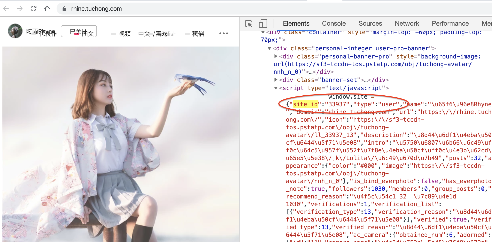
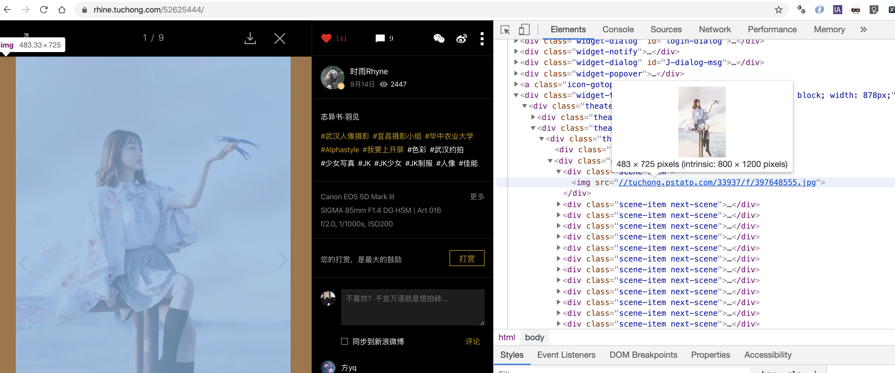

方法
首先，观察分析某个用户的图虫主页，例如 http://tuchong.com/1182492/ .

在Chrome开发者工具的Network板块下，监视XHR请求，然后往下滑动页面。posts?count=20&page=1&before_timestamp=1568996042，posts?count=20&page=2&before_timestamp=1568996042等名称会依次出现，它们名称中的page=1, page=2尤为瞩目。正是通过这些请求，往下滑动时，更多的图片 (page 2. page 3…)被加载出来。直接在chorme中打开其中一个XHR的URL——事实上，我们可以大胆地把除了“page”以外的所有信息删掉，即使用http://tuchong.com/rest/2/sites/1182492/posts?page=1访问：
得到的是一个结构类似于这样json（为了易读，这里进行了省略）：
{
"post_list": [
{
"post_id": "52844551",
"author_id": "1182492",
"url": "http://tuchong.com/1182492/52844551/",
"published_at": "2019-09-17 16:04:44",
"excerpt": "兔子",
"favorites": 137,
"comments": 3,
"title": "体操服少女",
...
"images": [
{
"img_id": 482124473,
"img_id_str": "482124473",
...
"source": {
"s": "https://tuchong.pstatp.com/1182492/s/482124473.webp",
"m": "https://tuchong.pstatp.com/1182492/m/482124473.webp",
"l": "https://tuchong.pstatp.com/1182492/l/482124473.webp",
...
},
},
...
],
"tags": [
{
"tag_id": 568650,
"type": "event",
"tag_name": "分享神仙颜值",
...
},
...
],
"site": {
"site_id": "1182492",
"type": "user",
"name": "KINGVISION",
"description": "资深人像摄影师",
"followers": 6995,
...
},
...
],
...
}
可以看到，对我们有用的信息，如用户id，用户名，图文（post）id和每条图文的所有图片信息（包括链接）和tags，都规整地被存储在post_list中
接下来再把URL结尾的page=1改成page=2，再次访问，以此类推，果不其然地得到了更多的信息。直到当请求的页数大于最大页数时，返回的json信息为：
{
post_list: [ ],
before_timestamp: 1568996042,
more: false,
counts: 95,
result: "SUCCESS"
}这样一来思路就很清晰了，只需要不断从https://tuchong.com/rest/2/sites/<user_id>/posts?page=<n>所返回的json中的post_list中抓取信息，不断增加页数直到post_list为空：
class Tuchong(object):
def __init__(self, home_url):
self.home_url = home_url # 如'https://tuchong.com/13044147/posts/'或'tuchong.com/13044147/posts'
id = re.findall(r'/(\d+)/', home_url) # 通过正则表达找到user_id，如'13044147'
self.user_id = id[0]
def get_post_list_raw(self):
print('正在抓取id为"' + self.user_id + '"的用户的所有作品的源信息...')
page_number = 1
post_list = [] # 所有页的`post_list`的集合
while True:
j = requests.get('https://tuchong.com/rest/2/sites/' + self.user_id + '/posts?&page=' + str(page_number)).json() # requests自带的json转字典的方法
next_post_list = j['post_list']
if next_post_list: # 若page_number大于最大页数，j['post_list']将为空
post_list += next_post_list
page_number += 1
else:
print('完成。')
return post_list把包含该作者所有作品信息的post_list搞到之后，我们就可以为所欲为。
修缮__init__()方法
由于接下来有意义的工作全部建立于post_list字典之上，所以初始化的时候就可以执行get_post_list_raw()并把结果和一些用户信息保存为实例变量：
def __init__(self, home_url):
self.home_url = home_url
id = re.findall(r'/(\d+)/', home_url)
self.user_id = id[0]
self.post_list = self.get_post_list_raw()
self.username = self.post_list[0]['site']['name']
self.followers = self.post_list[0]['site']['followers']另外，注意到有些用户设置了自定义二级域名，他们的主页URL是这样的：https://rhine.tuchong.com ，显然不能直接从主页URL中提取id. 通过分析源码和尝试，发现用户id其实就是出现多次的site_id，并且和普通用户一样可以通过https://tuchong.com/rest/2/sites/<user_id>/posts?page=<n> 获取包含作品信息的json：

因此我们可以这样改进__init__()方法，使之当无法直接通过URL获取用户id时候，通过访问页面并查找页面上紧跟"site_id"：之后的数字获取它：
def __init__(self, home_url):
self.home_url = home_url
id = re.findall(r'/(\d+)/', home_url)
if id: # if id found directly in URL
self.user_id = id[0]
else: # to deal with 'https://asamurai.tuchong.com/posts' etc.
html = requests.get(home_url).text
self.user_id = re.findall('"site_id":"(\\d+)"', html)[0]
...下载图片
获取图片链接
在源json或者转换成的字典中我们看到，每个图片的链接都是<https://tuchong.pstatp.com/<user_id>/<size>/<image_id>.jpg的格式（或者以.webp结尾1）：
# 这是抓取完成后的self.post_list字典
[
{
'post_id': "52909191",
...
'images': [
{
'img_id': 219325503,
....
source: {
't': "https://tuchong.pstatp.com/1182492/t/219325503.jpg",
'g': "https://tuchong.pstatp.com/1182492/g/219325503.jpg",
's': "https://tuchong.pstatp.com/1182492/s/219325503.jpg",
'm': "https://tuchong.pstatp.com/1182492/m/219325503.jpg",
'mr': "https://tuchong.pstatp.com/1182492/mr/219325503.jpg",
'l': "https://tuchong.pstatp.com/1182492/l/219325503.jpg",
'lr': "https://tuchong.pstatp.com/1182492/lr/219325503.jpg",
'ft640': "https://tuchong.pstatp.com/1182492/ft640/219325503.jpg"
},
...
],
...
},
...
]哪种格式的图片最大呢？通过逐个尝试，发现lr尺寸是最大的，但也最大只有900*600，即54万像素，太低了。这真的是最大尺寸的预览图了吗？我点进去某组图片认真欣赏，心想这个观看模式下的图肯定比900*600的预览图大，那么这些大图的源是什么呢？

发现其实图片链接的格式仍然一样，只是使用了一个不在json中指明的尺寸，即/f/ (full). 这个图片有1200*800，勉强迈入了高清 (720p)的范畴。 于是我们知道，最大预览图的下载链接为<https://tuchong.pstatp.com/<user_id>/f/<image_id>.jpg ,因此可以写出获取图片链接的方法
def get_image_urls(self, sort = True):
print('正在提取用户"' + self.username + '"的所有图片链接...')
if sort: # 根据post信息分类
id_and_image_urls = {}
for post in self.post_list:
this_post_urls = [] # each post can have multiple images
for image in post['images']: # looping over the list of images of this post
image_url = image['source']['lr'] # e.g. https://tuchong.pstatp.com/33937/lr/397648555.jpg
image_url = re.sub('/lr/', '/f/', image_url) # convert to 'full' size
this_post_urls.append(image_url)
id = post["published_at"][0:10] + '-' + post['post_id'] # 时间和post_id作为id
id_and_image_urls.update({id:this_post_urls})
print('完成。')
return id_and_image_urls
else: # 不分类，直接把所有链接存在一个列表中
image_urls = re.findall("'lr': '(.+?)',", str(self.post_list))
image_urls = map(lambda image_url:re.sub('/lr/', '/f/', image_url), image_urls)
print('完成。')
return(image_urls)下载图片
通过上面定义的get_image_urls()得到图片链接字典/列表，然后用requests.get()打开图片链接，最后用wb（二进制写入）模式把.content写入.jpg文件就行了。另外需要考虑的是创建文件夹和多线程下载。具体代码：
def get_images(self, threads = 'auto', sort = True):
print('正在下载用户"' + self.username + '"的所有图片...')
# 创建存放图片的文件夹，名为`<用户id>-<用户名>`
path = self.user_id + '-' + self.username + '/'
if not os.path.exists(path):
os.mkdir(path)
if sort: # 需要整理
# get urls as {time-post_id_1:[url1, url2], time-post_id_2:[url1, url2, ...], ...}
id_and_urls = self.get_image_urls(sort = True)
# 决定线程数
if isinstance(threads, int): # 如果指定线程数
threads = threads
else: # 默认的自动
l = len(id_and_urls)
if l == 0:
raise ValueError('此用户没有发布图片！')
threads = math.ceil(l/3)
if threads > 10:
threads = 10
# 不断下载id_and_urls中的posts
def download_post():
try:
this_post = id_and_urls.popitem()
except KeyError:
sys.exit() # 结束线程
id, url_s = this_post[0], this_post[1]
total = len(url_s)
print('正在下载post', id)
subdir = path + id + '/'
if not os.path.exists(subdir):
os.mkdir(subdir)
for i, url in enumerate(url_s, start=1):
# urllib.request.urlretrieve(url, subdir + str(i) + '.jpg')
with open(subdir + str(i) + '.jpg', 'wb') as img:
img.write(requests.get(url).content)
print(i, '/', total, ' of post ', id, ' from ', threading.current_thread().name, sep='')
download_post() # 递归
# 多线程
t_s = []
for i in range(threads):
t = threading.Thread(target=download_post)
t_s.append(t)
for t in t_s:
t.start()
for t in t_s:
t.join()
print('完成。')
else: # 如果不需要整理
image_urls = self.get_image_urls(sort = False)
if isinstance(threads, int): # 如果指定线程数
threads = threads
else: # 默认的自动
l = len(image_urls)
if l == 0:
raise ValueError('此用户没有发布图片！')
threads = math.ceil(l/6)
if threads > 10:
threads = 10
def download_image():
try:
url = image_urls.pop()
except IndexError:
sys.exit()
print('正在下载', url)
filename = re.findall(r'\d+\.jpg', url)[0] # `<https://tuchong.pstatp.com/<user_id>/f/<image_id>.jpg
# urllib.request.urlretrieve(url, 'img/' + self.username + '-' + str(i) + '.jpg')
with open(path + filename, 'wb') as img:
img.write(requests.get(url).content)
download_image()
t_s = []
for i in range(threads):
t = threading.Thread(target=download_image)
t_s.append(t)
for t in t_s:
t.start()
for t in t_s:
t.join()
print('完成。')